Education
2020 : B.Sc. in Aeronautical Engineering, Military Institute of Science and Technology, Dhaka Bangladesh
Awards
2020:‘MIST DEANS LIST-2019 Award’ for academic performance
2018:‘2nd Runners’ Up Award’ at Inter-Department ‘Computational Fluid Dynamics Contest’
Publication
2020: Navid Bin Mojahid, Kamrujjaman Rubel, Sayed Samiul Newaj, and N.R. Dhar “Effect of Carbon Nanoparticles on the Mechanical Properties of Banana Fiber Reinforced Polymer”, International Conference on Futuristic Trends in Mechanical Engineering, Presidency University, Bangaluru, India
Training and Courses
2018: Industrial Training in Biman Bangladesh Airlines
2017: Short Course on Computational Fluid Dynamics, held in MIST
Participation
2019 : AIAA DESIGN/BUILD/FLY CONTEST 2018-19, ARIZONA, USA
2018 : ADVANCED EMGINEERING MANAGEMENT CHALLANGE (AEMC), KUET, KHULNA, BANGLADESH
2018 : ENGENIOUS-2018, a natinal robotics contest, organizeed by Ahsanullah University Science and Technology, DHAKA, BANGLADESH
2017 : EEE DAY-2017, BUET, DHAKA, BANGLADESH
Undergraduate Thesis
Effect of Carbon Nanoparticles on the Mechanical Properties of Banana Fiber-Reinforced Polymer Composite
Abstract—Natural fiber-reinforced composites, at present, are having a significant role to meet the challenge of developing materials of high strength to weight ratio for the application in the field of automotive and aerospace. In this research, the effect of carbon nanotube (CNT) as filler material in banana fiber reinforced polymer has been studied by incorporating carbon nanotube and banana fiber with epoxy resin in different weight ratios. The materials were prepared by the hand layup process. Two cases were considered for the study where the sum of weight percentage of fiber and filler in the composite were kept 8% for the first case and 16% for the second one. The experimental results showed remarkable improvement in the tensile and flexural properties of the composite due to the addition of carbon nanotubes. The tensile strength increased by 11.33% for the addition of 1.5% of CNT in the first case and 13.29% for the addition of 2.5% of CNT in the second case. On the other hand, flexural strength increased by 71.5% and 123% respectively for adding CNT of stated weight percentage
.
PROJECTS
Design and Fabrication of a Radio Controlled Aircraft Having Wing Folding Mechanism and Payload Dropping System
The project was submitted to the American Institute of Aeronautics and Astronautics (AIAA) Design/Build/Fly (DBF) competition, held in TMPA field at Tucson, AZ. The supreme objective of the team is to design an aircraft that fulfills all the requirements while maximizing the competition score based on the provided score equations which are listed in rule book of the corresponding year. Main concern while determining the design was the folding wing mechanism and short take-off within 10x4 ft ramp which is inclined at 5 degree.
Clark YM-15 airfoil was chosen for the aircraft wing. The Propulsion system was single tractor (Motor Emax BL 4030 with Propeller size 16x8).Coefficient of lift / Coefficient of Drag vs angle of attack curves were obtained for Clark YM-15 using various turbulence modeling in ANSYS. Balsa wood was used as the main structural material.
Demonstration of electronic vehicle having automated speed control by detecting close obstacles
The equipments use are Arduino Uno, Arduino Nano, Ultarsonic Sensor, IR transmitter and Receiver. The ultarsonic sensor helps to detect close obstacles. The signal is received by the arduino as input and accordingly it sets the speed of the motor
 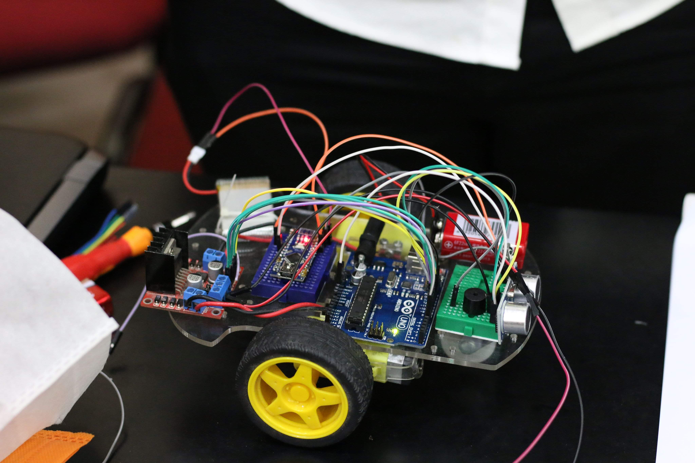
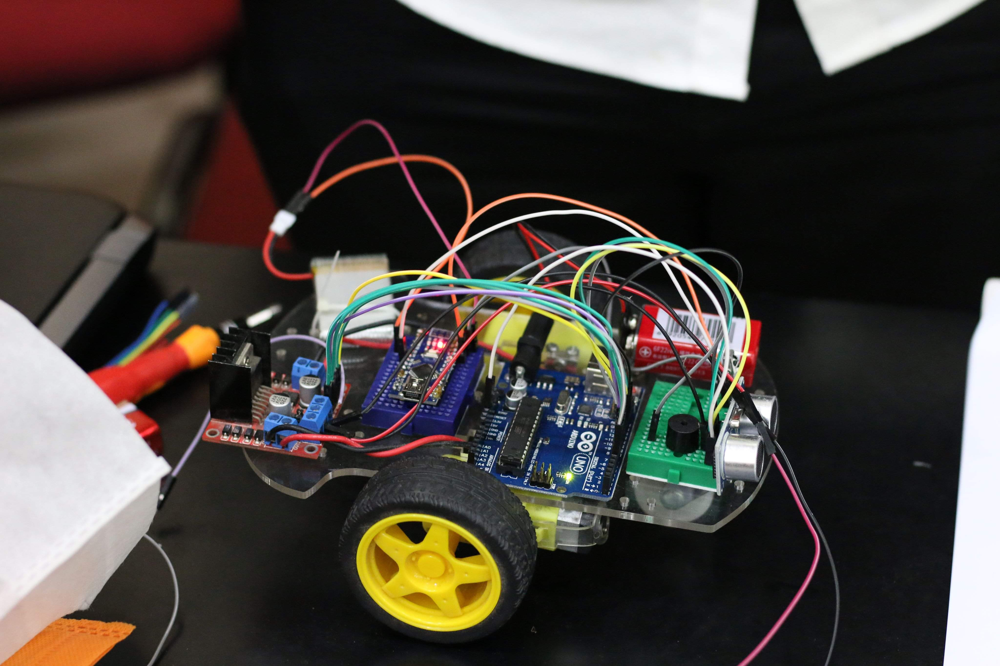
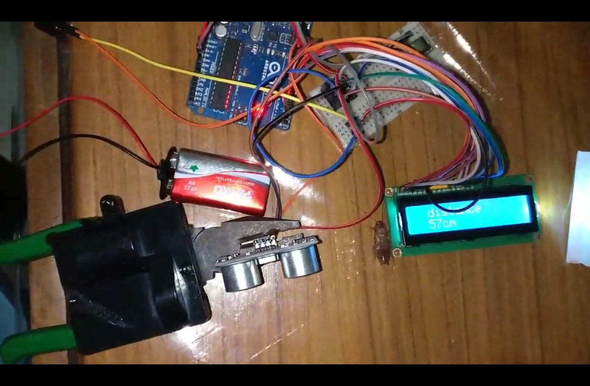
Distance measuring and obstacle detection system prototype. The equipments used here were, Arduino Uno, Ultrasonic Sensor and Buzzer The output was shown in an LCD Dsiplay (16x2)
EEE Day-2017, BUET, Dhaka
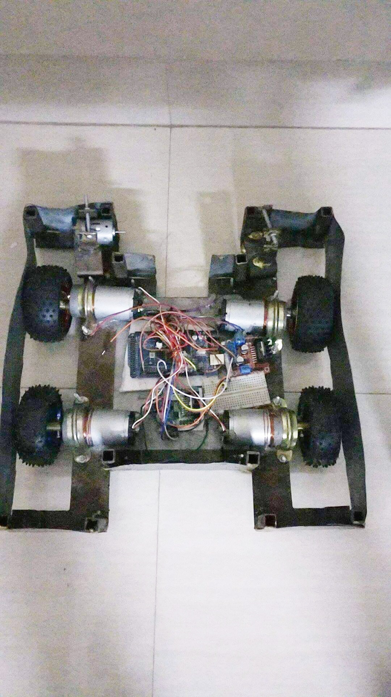 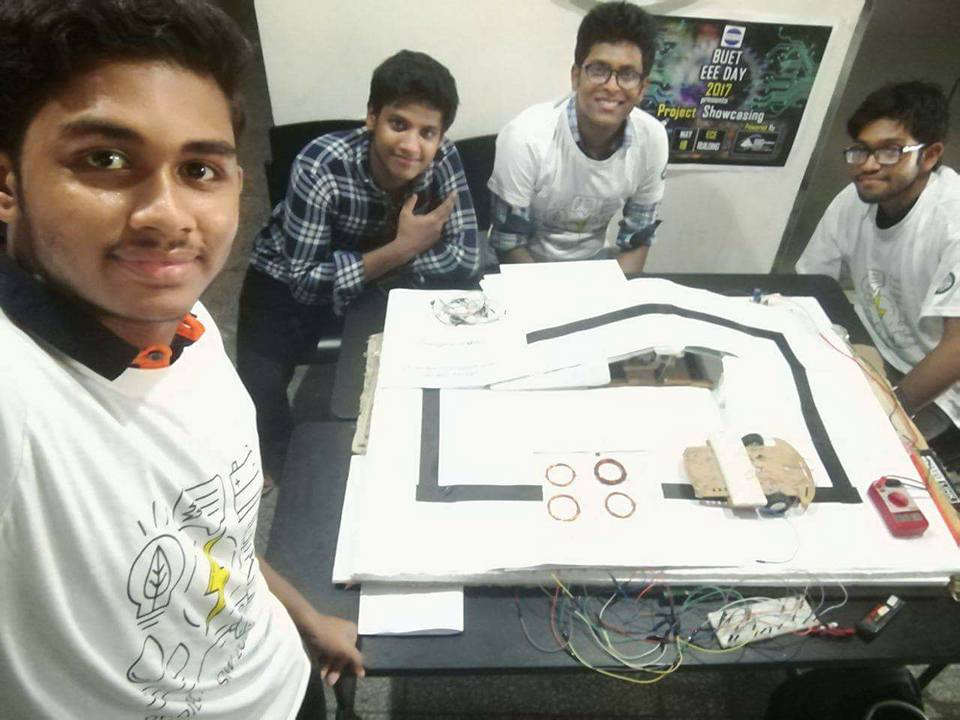
(1) An android controlled fighter robot prototype: It was built using Arduino Mega, Bluetooth Module HC-05, Motor Driver L298 and Four DC motor of torque 1kg (2) Demonstration of wireless charging system
Computer Aided Design
(1) It is a system that can provide motion along 3 axes. Any equipment set with holder on the top can be positioned at any point along 3-axis coordinate watch video
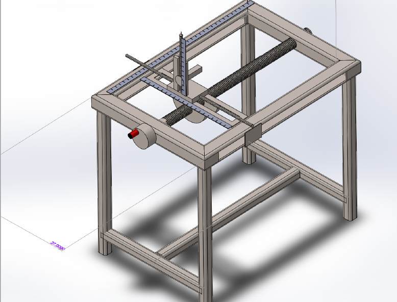
Download Main File
(2)Full Assembled Aircraft. It was designed for academic course in 4th year named "Aircraft Vehicle Design"
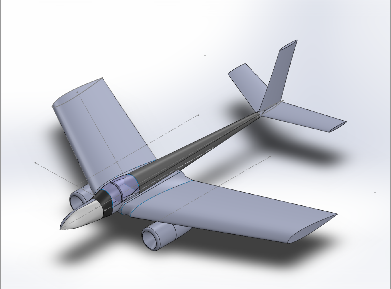
(3) Exterior design of a conventional automobile (all parts are assembled)
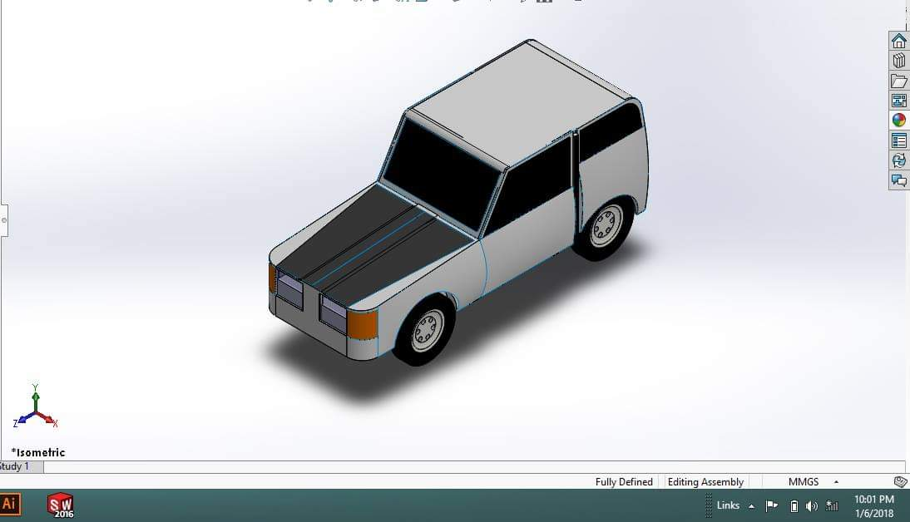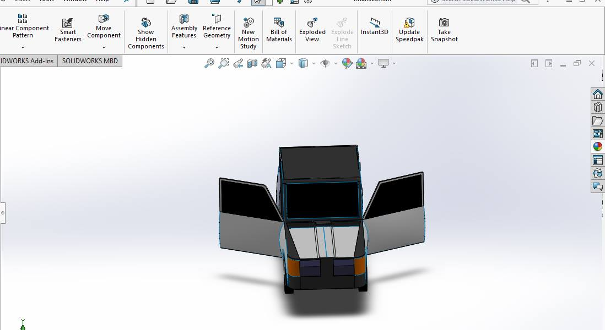
ANSYS Fluent flow simulation of a 3D wing
The right wing of the above designed aircraft has been simulated in ANSYS Fluent Flow. the airfoil of the wing is NACA 23015. The pressure and velocity of the air over the wing surface have been presented.
Meshing
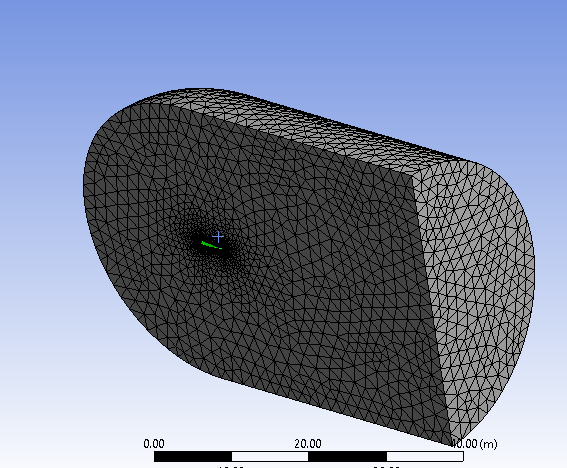
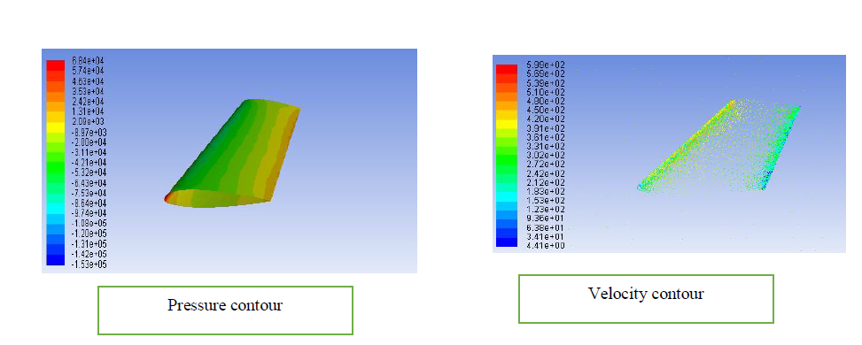
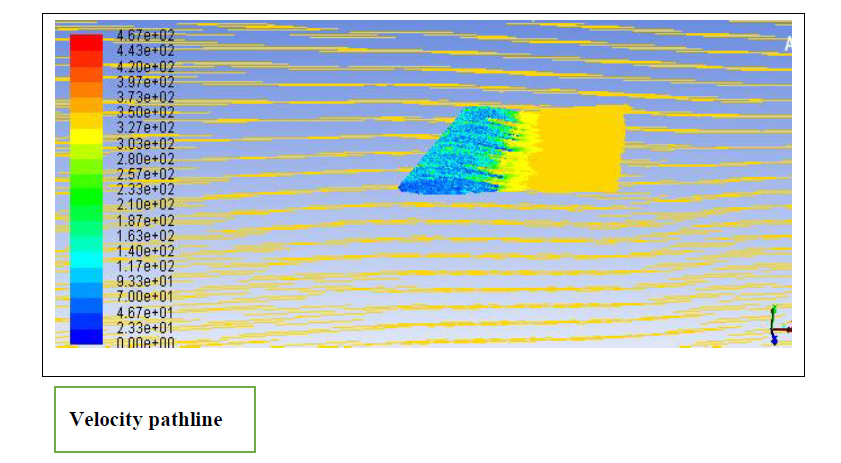
Work with MATLAB